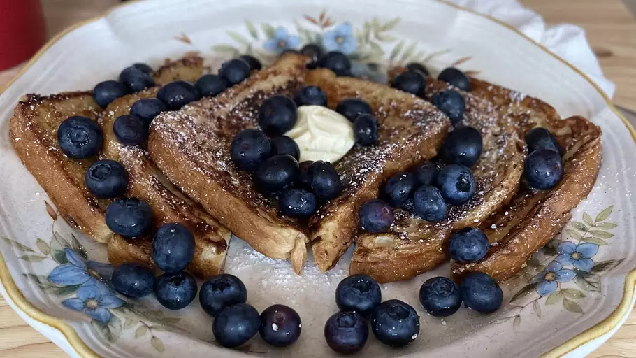

French Toast Recipe
Ingredients
- ⅔ cup milk
- 2 large eggs
- 1 teaspoon vanilla extract (Optional)
- ¼ teaspoon ground cinnamon (Optional)
- salt to taste
- 6 thick slices bread
- 1 tablespoon unsalted butter, or more as needed
Directions
-
Whisk milk, eggs, vanilla, cinnamon, and salt together in a shallow
bowl.
- Lightly butter a griddle and heat over medium-high heat.
-
Dunk bread in the egg mixture, soaking both sides. Transfer to the hot
skillet and cook until golden, 3 to 4 minutes per side. Serve hot.